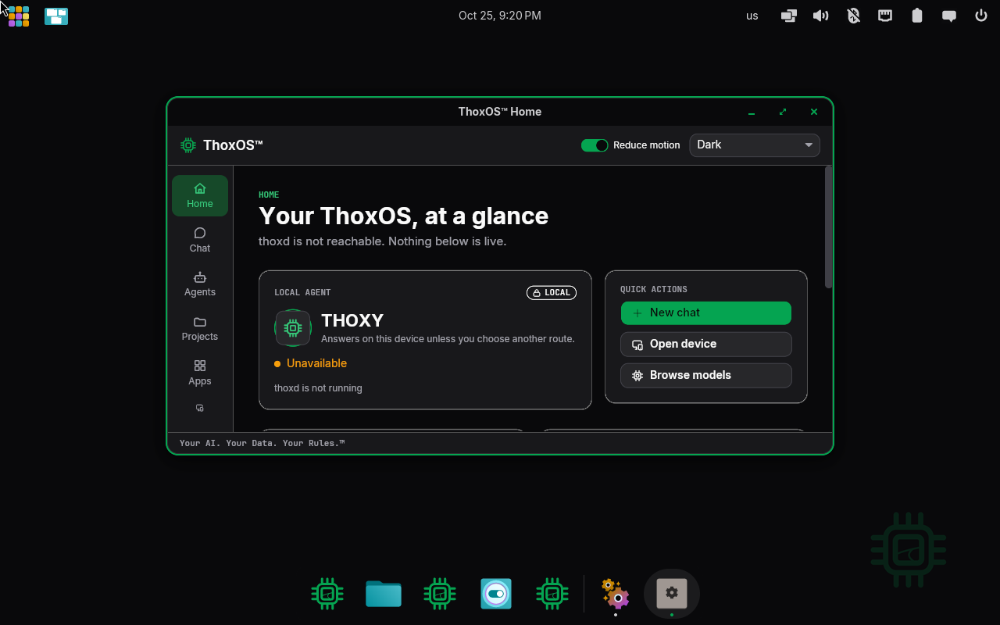
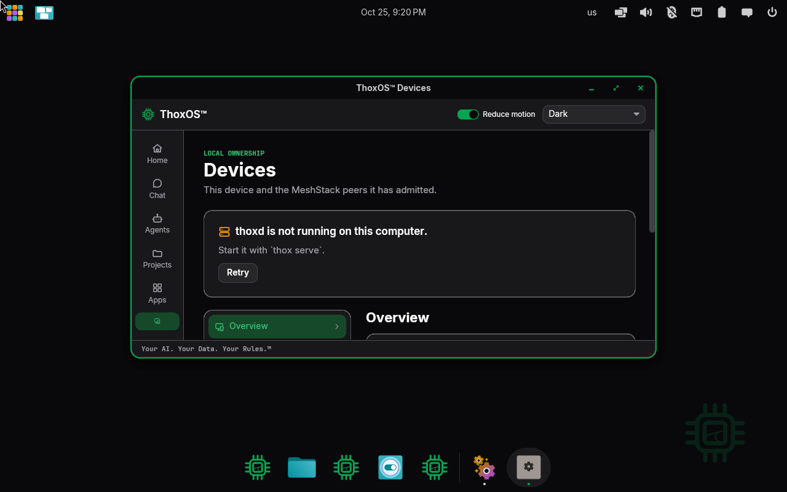
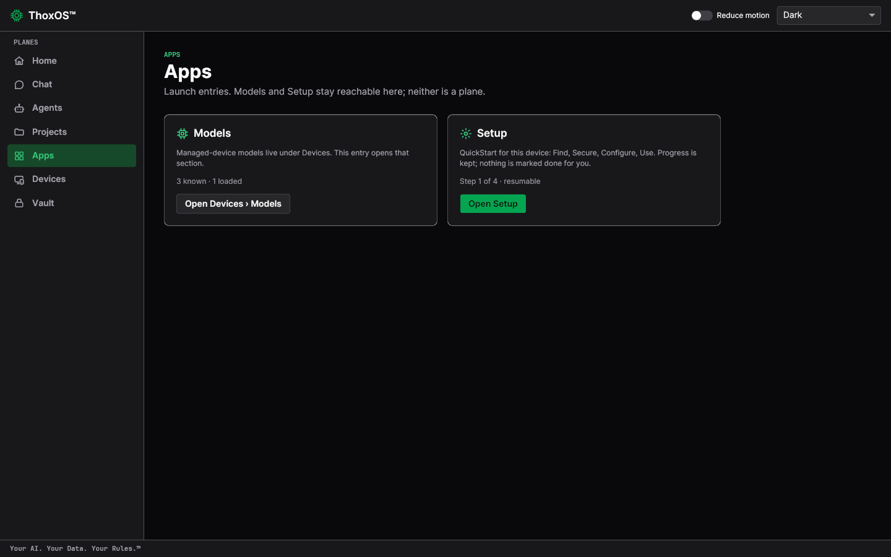
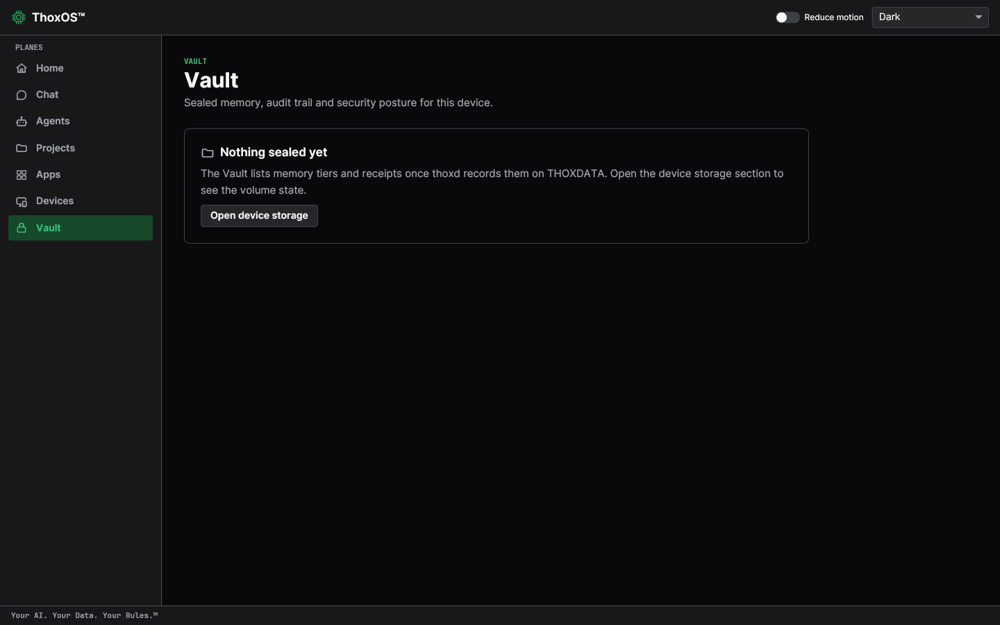
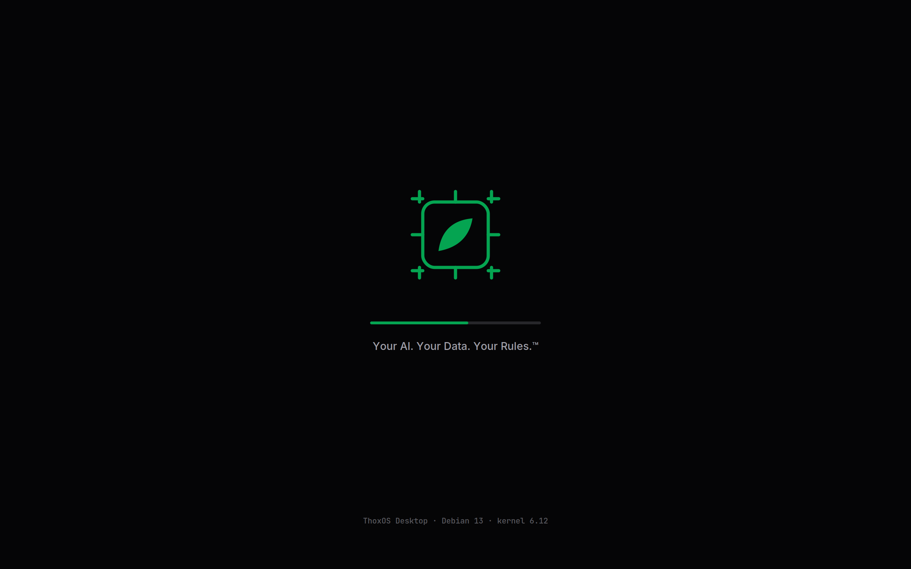
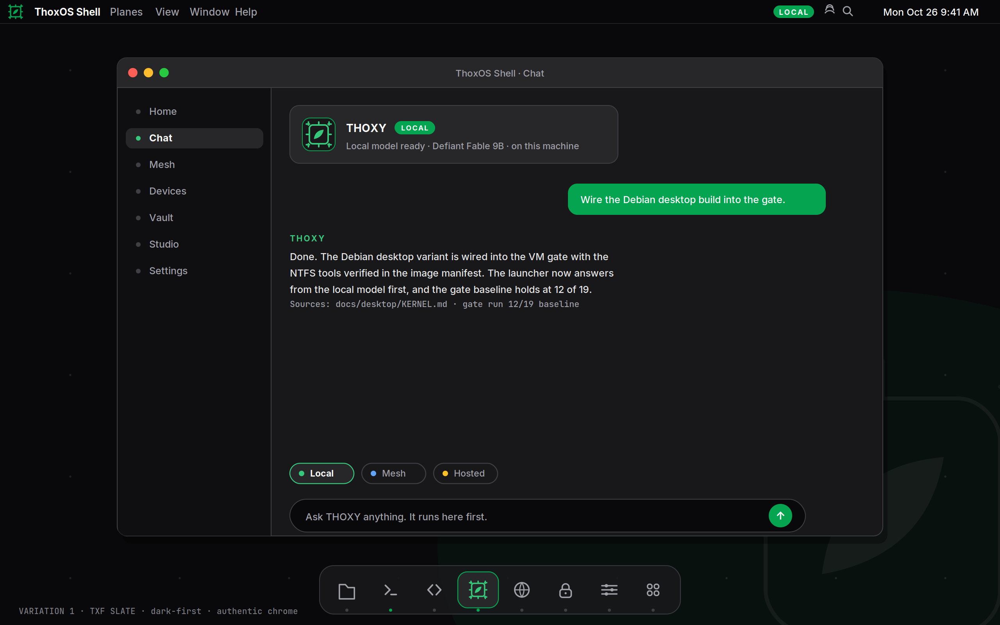

ThoxOS Open — Walkthrough D: ThoxOS desktop tour
Five stops on the real desktop (D-01 to D-05: the ThoxOS Shell running the current image, captured in a virtual machine and as the compiled shell application), then two design renders (D-06, D-07) showing where the visual design is heading — labelled as drawings, because that is what they are. The desktop is organised as planes — full-screen rooms down the left rail: Home, Chat, Agents, Projects, Apps, Devices, Vault — and every room carries the same footer: Your AI. Your Data. Your Rules.™

REAL — Shell home screen, VM capture 1 2 3D-01 — Home: your ThoxOS, at a glance
- The local agent card: THOXY, with its LOCAL chip — the agent that answers on this device.
- Quick actions: New chat, Open device, Browse models — the three things a first day actually does.
- The rail: every plane of the system, one tap each. This tour visits them in order.
Plain English: home is a dashboard, not a desktop of scattered icons. It answers three questions at a glance: is my agent here, what can I do, and where is everything.

REAL — Shell Devices screen, VM capture 1 2 3D-02 — Devices: what you own, and who it talks to
- The plain status card: on this capture the background service had not finished starting, and the page says so — with the exact command and a Retry button, not a spinner.
- Devices in the rail: this device and the MeshStack peers it has admitted. Nobody joins your mesh uninvited.
- The Overview section below: storage and volume state for the device, once the service is reporting.
Plain English: this room answers "what machines are in my house, and are they mine?" Each admitted device appears here with what it is pooling into the mesh.

REAL — Shell Apps screen, compiled shell capture 1 2 3D-03 — Apps: where Models and Setup live
- Models: "3 known · 1 loaded" — the models on this device, managed under Devices. This entry opens that section.
- Setup: the device's own QuickStart — Find, Secure, Configure, Use — with progress kept and resumable. Nothing is marked done for you.
- The planes rail, complete: Home, Chat, Agents, Projects, Apps, Devices, Vault.
Plain English: Apps is deliberately short. It is a doorway to the two things people come looking for — the models and the setup checklist — not another pile of icons.

REAL — Shell Vault screen, compiled shell capture 1 2D-04 — Vault: sealed memory and receipts
- "Nothing sealed yet" — a fresh device's Vault is honestly empty. Sealed memory tiers and their receipts appear here as the service records them on THOXDATA.
- Vault in the rail: the room for the device's audit trail and security posture.
Plain English: the Vault is where ThoxOS keeps its proofs — what was remembered, what was sealed, what left the device and when. Empty on day one is the correct first picture.
 REAL — Shell Chat screen, VM capture (same capture as C-03)
1
2
3
REAL — Shell Chat screen, VM capture (same capture as C-03)
1
2
3
D-05 — Chat: the room you will live in
- Route chips under the prompt box: Local, Mesh, Hosted — whose computer answers, chosen per conversation.
- Starter prompts that teach the system: summarise notes, draft a checklist, explain processing locality.
- The footer that never changes: Your AI. Your Data. Your Rules.™
Plain English: chat is where the models from Walkthrough C become useful. The route chips are the privacy model made visible — you can always see, and always choose, where an answer is computed.

SIMULATION — drawn design render, not a capture 1 2D-06 — The design direction: boot
- The THOX mark, centred, over a quiet field.
- The tagline and version line the design study proposes.
Plain English: a drawing of a calmer boot. The real boot, as it exists today, is Walkthrough B figures B-01 and B-02 — believe those.

SIMULATION — drawn design render ("Variation 1 · TXF Slate"), not a capture 1 2 3D-07 — The design direction: Slate desktop
- The planes list the running shell already carries as its rail.
- The local agent's card, marked THOXY · LOCAL — the same card that is real in D-01.
- A dock the running shell does not have yet. Anything in this drawing that looks like a model answering is part of the drawing.
Plain English: the target, pinned next to the reality on purpose. Where they differ, believe the captures.